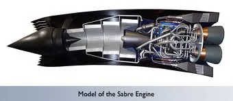
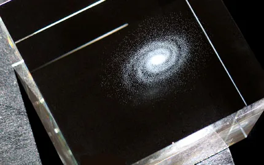

Blog · April 29, 2012
Whoa! #lifebonus
About a month ago I shared #lifebonus, the first installment of an ongoing series designed to incite surprise and discovery in life. Or at least my inbox. Today, here is another round.
On Friday, the following Facebook status went live while a more personal email went out to a few friends:

Subject: Life Challenge
Are you having an awesome day? Yes?! Yes.
This week’s Life Challenge:Share something that made you say “woah!!! ..but is it too geeky to share?”
Due Sunday at noon, or earlier if you’re an intellectual baller.
Response could be a great article from 3 years ago or a photo you saw yesterday or a crazy fresh resource, such asBrowse nature’s solutions to challenges such as network cooperation (think interwoven trees and UV protection from bacteria), physical integrity (think bones and trees) or mechanical energy (think spider legs using hydraulic lift and how honeybees fly). Browse around. You’ll be surprised how exciting it is. Covert learning.
via Nicholas Sykes at TEDxSummit
Cheers, have a wonderful weekend and take three deep breaths right now (seriously it’s good for your biochemistry). I’ll blog some replies and send out a post on Monday so that your week will start out with a little bit of epic. And if you are curious for more Wow!Geek discoveries, let me know and I will be happy to share a few more.
Amy
Try this with your friends.
Who knows what you might discover? I do.
The scale of the universe.
History meets Quora and Reddit:
Ask about any era of history and get answers from professional historians!
Keep in mind that this forum is for asking questions about what did happen, not what could have happened had something gone differently. For those types of questions, check out /r/historicalwhatif
Images from the Boston Globe Big Picture‘s Earth Day Gallery.
This slideshow requires JavaScript.
Science and Tech

Rockets that breathe. SABRE engines “use atmospheric oxygen in the combustion process. The engine achieves this with its two modes of operation: its air-breathing and conventional rocket capabilities.”
Magnetic Fields light up ‘GPS’ neurons. Findings allow scientists to infer that birds, like compasses, can determine both direction and relative position. Importantly, this research adds to evidence “showing how single brain cells can record multiple properties or complex qualities in a simple way.”


Philosophy
12 Things you should be able to say about yourself:
1. I am following my heart and intuition.
2. I am proud of myself.
3. I am making a difference
4. I am happy and grateful.
5.I am growing into the best version of me.
6. I am making my time count.
7. I am honest with myself.
8. I am good to those I care about.
9. I know what unconditional love feels like.
10. I have forgiven those who once hurt me.
11. I take full accountability for my life.
12. I have no regrets.
Awesome tapes from Africa: “music you won’t easily find anywhere else—except, perhaps in its region of origin.”
Popularity data:
Curious world!
At Wikipedia, it always interesting to see traffic on various articles, Some are constant while others are “One-Day-Hero” articles, receiving 1million views in one day, and that’s it – nothing after that. The world acts in curious ways.
Here is an example: Google Launched Zipper Doodle few days back on Gideon_Sundbäck‘s B’Day. (Click here to see the doodle) You can see his article received 1m+ views on that day, and almost negligible traffic today.
For me, its something interesting, how the mind works and how someone [or something] gets popular overnight, and then is again forgotten over the next few days.
I hope this post contains something cool for you to think about. The way I see it, your mind is a world. You are a wold abundant with resources like intelligence, stories, experiences, perspectives, curiosity.. Your self resources can be – and I think are best when – shared.
Be creative in your pursuit of extraordinary interactions. Send out a Life Challenge or other playful yet serious opportunity with which friends can spice their minds. Think of it as a game.
What should I send out next week? I love discovering innovations and ideas you are passionate about.
Finally, this last image came as a Life Challenge response, too. What does it mean to be happy, anyway?
In the words of my friend Carlos,
“Love this! Nothing is too geeky, Amy.”
I concur. Bring on the geek.
Thanks to Marconi Pereria, Rio de Janeiro; Antonella Broglia, Madrid; Will Sterling, Nashville TN; Mosab Abulkhair, Amman Jordan; Cody Marx Bailey, Austin Texas; Ramy Nassar, Waterloo Canada; Terry Pollard, Oxford UK; Kevin McClure, Birmingham Alabama; Shreenath Regunathan, San Francisco California; Philip Kovacs, Huntsville Alabama; Chris Palmer, Huntsville Alabama; Kat Haber, Vail Colorado; Hugo Schotman, Zurich Switzerland; Abhishek Suryawanshi, Pune India; Nicholas Sykes, Doha Qatar.
First published on my old blog, amyrobinson.wordpress.com, April 29, 2012.